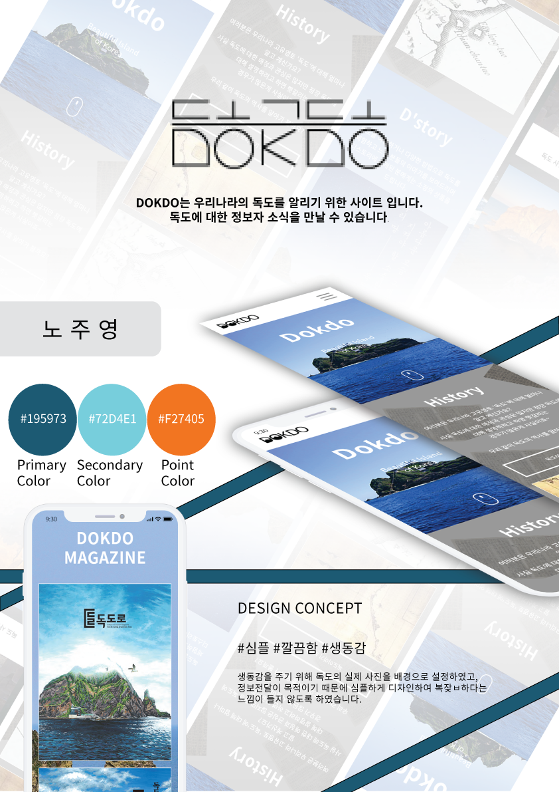

-
#UX기획
사용자 리서치를 통한 Insight를 도출
Problem을 해결하는 다양한 Soluction -
#프로그래밍 구현
HTML/CSS 시멘틱 웹코딩뿐만 아니라
Javascript와 jQuery로 다이나믹 웹로직 구현 -
#UI 디자인
사용자 경험을 고려한 컬러, 폰트, 레이아웃을
선정해 원하는 UX를 이끌어내는 감각있는 디자이너
로딩중
Roh Joo Young
Creative Publisher
감각적이고 센스 있는 웹퍼블리셔 노주영입니다
시야를 넓히고, 열린 마음과 도전의식을 가진 인재가 되겠습니다.
스크롤바를 내리면 작품을 감상할 수 있습니다.
ABOUT ME
감각적이고 센스있게 배워가는 웹퍼블리셔
무엇을 하더라도 제가 속해 있는 공동체에 도움이 되는 존재가 되고 싶습니다.
트렌드를 반영하여 코딩기술을 활용할 수 있는 프로그래밍을 하는 웹 퍼블리셔가 되는 것이 제 목표입니다.
디자인과 코딩을 비롯해 다방면의 능력이 필요하다는 점이 매력적으로 느껴져
새로운 공부에 도전하게 되었습니다..
안주하지 않고, 발전을 위해 노력하는 사람이 되겠습니다.
사용가능한 프로그램
- HTML5
- CSS3
- Javascript
- SASS
- Emmet
- jQuery
- 포토샵
- 일러스트
- AdobeXD
- VSCode
- 파워포인트
- MS-WORD
- HWP-한글
탁월한 UX분석능력과 Emmet/Zencoding 활용
-
UX/UI 디자인
사용자의 Context와 Needs를 파악하고
Problem을 해결할 수 있는 Insight 도출 -
반응형 웹표준
시멘틱을 지향하는 HTML/CSS 작성능력 보유,
자바스크립트와 제이쿼리 기반의 로직 구현 가능
SASS 전처리기와 리액트 라이브러리 활용
-
Sass Preprocessor
협업 웹코딩의 필수 기술인 SCSS를 이용한
CSS 스타일링을 원활이 사용할 수 있습니다. -
반응형 웹표준
국내 프론트엔드 시장의 대세 리액트 코드구현,
자바스크립트와 제이쿼리 기반의 로직구현 가능
나의 특별한 능력
젠코딩
HTML5
CSS
jQuery
웹기획
디자인
95%
리더쉽
적극성
창조성
사교성
책임감
정직성
온라인 이력서
머릿속으로 상상하고 느꼈던 것들을 시각적으로 실현해 내려고
노력하고 있습니다.
열린 마음으로 아이디어를 함께 공유할 때 의견을 존중하며 논의할 수 있고,
도전 의식을 가지고 시도를 함으로써 다양한 결과물들을
실현해 낼 수 있습니다.
새로운 코딩기법과 디자인을 배우는 것이 정말 즐겁고, 결과물을 통해 뿌듯함과 성취감을 느끼며
더욱 발전하고 있습니다.
WORK STYLE
- 구조와 디자인, 기능을 분리한 MVC패턴을 구현
- 자바스크립트와 jQuery를 구현
- HTML5 시멘틱과 CSS3 웹페이지를 구현
주위 사람들이 말하는 나
-
미경
--
-
윤영
--
-
은별
--
PORTFOLIO
1. 빽다방 (리뉴얼 디자인)
PAIK’S COFFEE Renewal Design
기존 웹사이트의 개선사항을 찾아 메인페이지를 리뉴얼 디자인하였습니다.
빽다방의 컬러 아이덴티티를 사용하여 브랜드 이미지를 강조하였으며,
간결한 레이아웃으로 전달하고자 하는 내용을 보기 쉽게 배치하였습니다.
작업프로그램 : Photoshop, Visual Studio Code
100% 개인 작업


이삭토스트 (리뉴얼 디자인)
ISAAC TOAST Renewal Design
기존 웹사이트의 개선사항을 찾아 메인페이지를 리뉴얼 디자인하였습니다.
이삭토스트의 컬러 아이덴티티를 사용하여 브랜드 이미지를 강조하였으며,
간결한 레이아웃으로 전달하고자 하는 내용을 보기 쉽게 배치하였습니다.
작업프로그램 : Photoshop, Visual Studio Code
100% 개인 작업


단양 여행(추천여행지) 사이트 디자인
DANYAGN TRAVEL Site Design
4가지 카테고리로 나누어 단양의 대표적인 문화를 소개하는 원페이지
형식의 사이트를 제작하였습니다. 도담삼봉을 담은 로고마크를
디자인하였으며, 로고에 사용된 컬러를 적용하여 통일성을 주었습니다.
작업프로그램 : Photoshop, Illustrator, Visual Studio Code
100% 개인 작업


필요한 기능을 직접 javascript/jquery 로직 구현
‘스타일을 창조하여 그것을 섬세한 디자인으로 탈바꿈 시키고싶다’ 는 마음으로 매일 노력하고 있습니다.
HTML5 & CSS3 시멘틱 페이지를 SCSS, ZenCoding(EMMET)으로 작성할 수 있습니다.
클라이언트의 요구사항을 적극적으로 반영하는 UI/UX 디자인 능력은 저의 최고의 장점중 하나입니다.
JS 플러그인을 사용에 그치지 않고 필요한 기능을 직접 구현할 수 있는 Javascript/jQuery 로직구현이 가능합니다.
새로운 코딩기법과 디자인을 배우는 것이 정말 즐겁습니다.
for문과 다중 if문의 결합한 로직 구현
SASS, Emmet 활용
페이지 전체의 계층구조를 입체적으로 분석할 수 있는
실무형 코딩기법 Emmet을 사용할 수 있어 업무시간을 단축시킬 수 있을뿐 아니라,
유지보수도 더욱 쉽고 정확하게 처리할 수 있습니다.
SCSS의 가장 큰 장점인 변수와 Mixin 기능을 적극 활용하여
CSS 스타일링을 할 수 있습니다.
Sprite-Image와 IR(Image Replacement)기법에 능숙
id, class를 남발하지 않고 원하는 요소를 셀렉팅할 수 있는 능력,
CSS3 Transform, Transition, Keyframes을 이용한 애니메이션 효과 구현
직접 구현한 슬라이드
-
좌우이동 슬라이드
슬라이드 구현에 적합한 ul,li,a 태그와 flxe를 사용하여 UI를 구현하였습니다.
슬라이드 보기
또한 자바스크립트로 position의 lef값을 동적으로 변화시켜 이동하도록 하였습니다. 플러그인 없이 직접 구현하였습니다.
-
이전다음 자동실행 슬라이드
이전, 다음 기능을 가진 업그레이드 된 슬라이드로서 사용자 편의성을 향상되었습니다. 제이쿼리의 fadeIn(), fadeOut() API를 이용하여 코드를 구현하였습니다. 플러그인 없이 직접 구현하였습니다.
슬라이드 보기
-
페이드 시작정지 슬라이드
시작, 정지기능이 장착된 슬라이드로서 일관성있게 한쪽 방향에서 다음 슬라이드가 노출되는 기능을 append() API와 콜백함수의 개념을 접목하여 구현하였습니다. 플러그인 없이 직접 구현하였습니다.
슬라이드 보기
UX DESIGN
작품리스트
이전 다음내가 생각하는 사용자경험 - User Experience
UX의 정의에 대해서 알아보고, 다양한 UX의 사례들, 특히나 성공적인 UX라 불리는 사례들을 보면서
사용자 경험을 바탕으로 어떤 제품이나 서비스를 구축하는 것의 중요성을 깨달았다.
내가 생각하는 UX란, 사용자가 원하는 기능을 사용할 때 사용자가 불편함을 느끼지 않고 사용할 수 있도록 하고,
원하는 활동을 편리하게 제품이나 서비스를 이용하여 할 수 있도록 하는 것이라는 생각이 들었다.
사전적인 의미에서 UX란 사람의 여러 감각과 감정의 총합을 뜻하는데, 내가 생각하는 UX는 ‘불편함’이라는,
혹은 다르게 불릴 수도 있는 부정적인 감정을 최소화시키는 것이라는 생각이 든다.
서울시 버스 도착 알림 서비스

디자인과 UX의 차이
- 1. 와인 코르크 마개
-
와인의 코르크 마개를 작은 다육식물
화분으로 업사이클링(Upcycling)한 사례


- 2. 물티슈 보호 캡
-
오염, 수분증발을 방지하는 물티슈 보호
캡을 콘센트 보호 덮개로 활용한 사례

UI DESIGN
{kind=link}
{kind=link}
{kind=link}
{kind=link}
{kind=link}
{kind=link}
{kind=link}
{kind=link}
메세지를 담아내는 디자인으로 나아가고자 합니다.
디자인을 시작하기에 적지많은 않은 나이입니다. 하지만 막상 웹디자인의 뚜껑을 열어보니 이전에 배웠던 것들이
웹디자인에 도움이 되는 것들이었습니다.
웹디자인 프로젝트를 진행할 때마다 배운 것들을 적용할 수 있어서 지난 시간을 허투로 보낸것이 아니라는 점을
깨닫고 자신감을 얻을 수 있었습니다.
덕분에 늦은 수업 시간까지 시간가는 줄 모르고 즐겁게 작업을 해오고 있습니다.
대표작품
